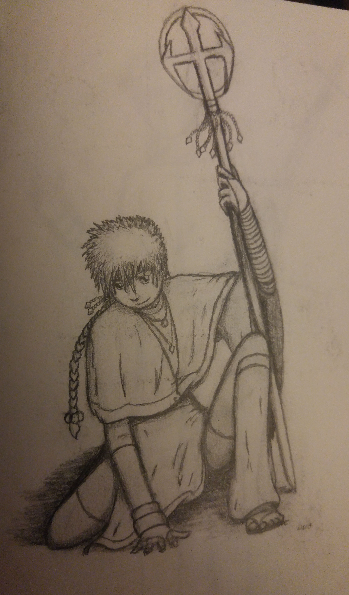

Posted here are the works and images of works created by the site's artist. There will be specific links to various types of works: photographs, paintings, drawings, graphic designs...eventually. For now, there are a few samples of just a couple works:
Note: the Home link icon is a graphic design created by the artist.